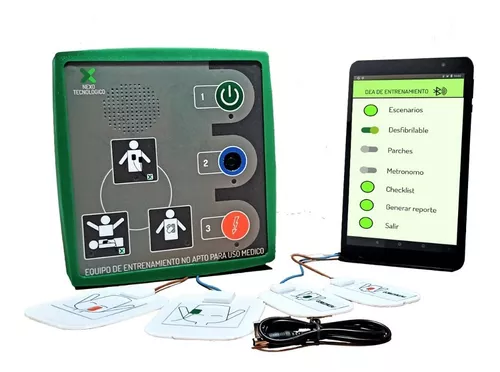

Nuestros Servicios

DEA DE TRATAMIENTO PARA CAPACITACIONES EN RCP
La mejor capacitación en tus manos
La aplicación de NEXO TECNOLÓGICO le entrega al Entrenador herramientas permitiendo simular escenarios más reales, ayudando al alumno a perfeccionar la técnica.
Además toda acción realizada tanto por el alumno, como el entrenador, es registrada en tiempo real y enviada via mail, creando un retroalimentación instantánea para el analisis insitu y evaluación posterior de las maniobras realizadas.
A través de un celular o una tablet (android) con conexion a bluetooth, se puede hacer uso de la aplicación de Nexo Tecnológico, siendo la misma muy intuitiva para manejar.
En el siguiente video podra conocer nuestros productos.
Uso de desfibrilador externo automático (DEA):
Conocimientos básicos para utilizar de manera rápida y efectiva el Desfibrilador Externo Automático (DEA) para complementar el curso de Reanimación Cardiopulmonar (RCP). Duración 1 hora.
Primeros auxilios, RCP y Uso de disfibrilador externo automatico (DEA):
Conocimientos para manejar de manera asertiva las emociones en situaciones de emergencia, acompañar e identificar las principales causas del agotamiento emocional y las medidas para combatirlas. El curso permite incorporar conocimientos prácticos sobre Primeros Auxilios Psicológicos y pautas de autocuidado.